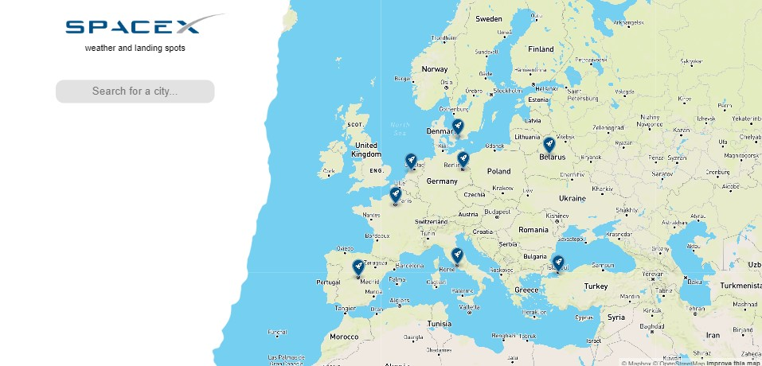

Welkom op mijn website
Na een lange tijd in Mars te hebben gewoond mogen er nu 32 mensen weer terug naar de aarde. Om de ex-Marsbewoners te helpen, heeft Elon Musk de Haagse Hogeschool gevraag voor een live dashboard. Waar de ex-Marsbewoners de ideale landingsplaatsen kunnen vinden.
De website bestaat uit twee delen. De linkerkant, ook wel het witte deel van de website, is het zoekgedeelte en aan de rechterkant is de plattegrond van de aarde. Op het moment dat je op een van de raketten klikt krijg je een korte uitleg over die locatie. Wanneer een plaats of land wordt ingevoerd in de zoekbalk, zoomt de kaart naar dat deel en toont het witte deel van de website de plaats, datum, temperatuur, etc. Bij mobiele en staande iPad-versies komt het witte zoekgedeelte boven aan te staan en de plattegrond onderaan.
Tijdens het maken van de website heb ik de volgende afmetingen gebruikt in Chrome:
Website 1280 x 620,
iPad liggend 1024 x 768,

iPad staand 768 x 1024,
Galaxy A70 414 x 736,
Apple 5/SE 320 x 568